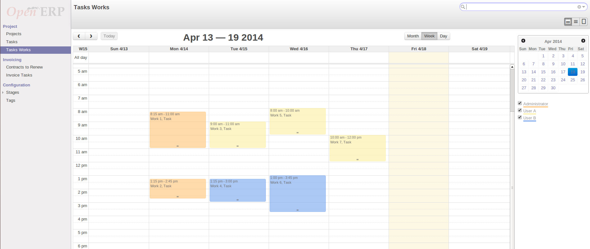

<section class="oe_container oe_dark">
    <div class="oe_row oe_spaced">
        <h2 class="oe_slogan">Project task work views with a menu</h2>
        <h3 class="oe_slogan"></h3>
        <div class="oe_span6">
            
        </div>
        <div class="oe_span6">
            <p class='oe_mt32'>
Adds a calendar view for the module project and a note summarizing the task work performed for the task selected.
            </p>
            <p class='oe_mt32'>
You can manage your projects works from the calendar view.
            </p>
        </div>
    </div>
</section>